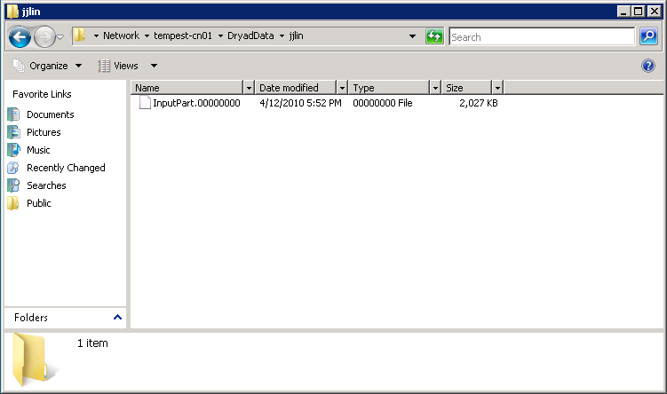
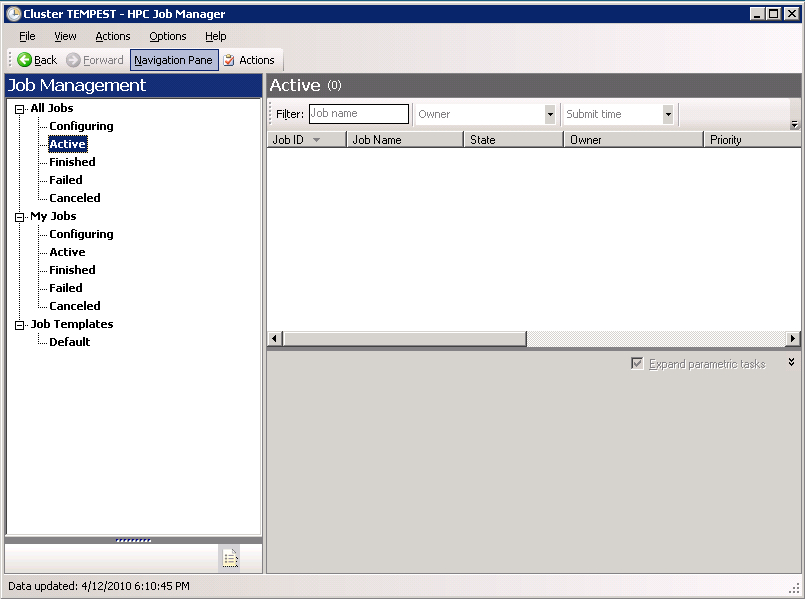
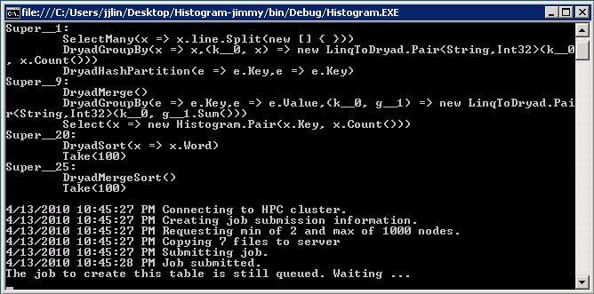

Due: Tuesday 4/27 (2pm)
Before you start, make sure you've read the Dryad and DryadLINQ papers assigned in class. You will also find this helpful: Some sample programs written in DryadLINQ.
Start Windows Remote Desktop. Log into the Dryad cluster with the credentials distributed in class. Keep in mind that this is a shared account everyone in the course will use, so be careful!
First, let's understand the notion of a partitioned file in DryadLINQ. A partitioned file on disk consist of two parts:
In DryadLINQ, there is no equivalent of HDFS (at least in the academic release we have access to). So the pieces of data reside on the local disks of the cluster nodes. Let's start off by examining these files.
Go to the Start menu, and in the "Start Search" box, type
\\tempest-cn01. A window should pop up allowing you to
explore the file system on the remote node. Go into
folder DryadData > jjlin: you should find a file named
InputPart.00000000. You will see something like
this:

You should be able to open the file in notepad and examine its
contents. Now go to the same location on cluster
nodes tempest-cn02, tempest-cn03, tempest-cn04.
Open the InputPart files in notepad. They should all look familiar.
Be careful not to modify these files, as others will be examining them
also.
Question 1. Write down the first line of text in each of the four text files on the four cluster nodes. This will demonstrate that you have indeed examined all four partitions.
On the desktop you should find a file
named InputParts.pt; open up that file in notepad. Its
contents should look like this:
DryadData\jjlin\InputPart 4 0,0,tempest-cn01 1,0,tempest-cn02 2,0,tempest-cn03 3,0,tempest-cn04
The is the metadata that describe each of the pieces of this partitioned file.
As a note, there is currently no command-line mechanism to
partition a large file into pieces and distribute to each node (i.e.,
there is no equivalent of a hadoop fs -put command). You
can perform the partitioning programmatically, but for this exercise,
I had to manually copy each file onto each node.
Click the Start button and launch the HPC Job Manager. If the icon isn't in the Start menu, you can search for it. It should look something like this:

Put it aside for now. This is the closest equivalent to the Hadoop Jobtracker in DryadLINQ, and through this application you'll be able to monitor the progress of your DryadLINQ job.
On the desktop, you should find a folder
called samples. Open the folder, and inside find a
folder named Histogram. This is the word count example.
Make a copy of that folder on the desktop, and append your name to the
folder name: something like Histogram-Jimmy. This way
you will have your own copy of the code and will not affect other
people who may be logged in at the same time.
Go into the new folder you've created. Double click on the Visual
C# Project File named Histogram, and it should start
Visual Studio. On the right hand box you should
find Program.cs; click on it and you should see the
source code for the word count example. The code is repeated
here: complete C# code for the word count
example in DryadLINQ.
Let's take a look at the BuildHistogram method, which
is where the action takes place:
public static IQueryable<Pair> BuildHistogram(
string directory,
string fileName,
int k)
{
string uri = DataPath.FileUriPrefix + Path.Combine(directory, fileName);
PartitionedTable<LineRecord> inputTable = PartitionedTable.Get<LineRecord>(uri);
IQueryable<string> words = inputTable.SelectMany(x => x.line.Split(' '));
IQueryable<IGrouping<string, string>> groups = words.GroupBy(x => x);
IQueryable<Pair> counts = groups.Select(x => new Pair(x.Key, x.Count()));
IQueryable<Pair> ordered = counts.OrderByDescending(x => x.Count);
IQueryable<Pair> top = ordered.Take(k);
return top;
}
First, we tell DryadLINQ where to get the input files:
string uri = DataPath.FileUriPrefix + Path.Combine(directory, fileName); PartitionedTable<LineRecord> inputTable = PartitionedTable.Get<LineRecord>(uri);
This is equivalent in Hadoop to specifying the TextInputFormat. Next:
IQueryable<string> words = inputTable.SelectMany(x => x.line.Split(' '));
The SelectMany method transforms a scalar into a list. The following:
x => x.line.Split(' ')
can be understood as a lambda expression. So if the input were "A B B C", the output would be ["A", "B", "B", "C"]. The next line of code performs a group by:
IQueryable<IGrouping<string, string>> groups = words.GroupBy(x => x);
If the input were ["A", "B", "B", "C"], the output would be [ ["A"], ["B", "B"], ["C"]]. The next line creates Pair objects from the groups:
IQueryable<Pair> counts = groups.Select(x => new Pair(x.Key, x.Count()));
And finally, we sort by count and take the top k.
IQueryable<Pair> ordered = counts.OrderByDescending(x => x.Count); IQueryable<Pair> top = ordered.Take(k);
Got it? Now let's try running the code.
In the Visual Studio toolbar next to the dropdown box that says "Debug", there should be an icon that's a green arrow pointing to the right. Click on that button. A command-line window should pop up and some code should scroll by, showing you something like this:
This means your job has been queued. An instant later it should start running, and you should be able to see the job in the HPC Job Manager from above.
Question 2. After your job completes, the command-line window should show the results. Write down the five most frequently-occurring words in the collection and their counts, to demonstrate that you've successfully run the job.
Question 3. Modify the code so that it displays the first five words (ordered in reverse alphabetical order) and their counts from the collection. In other words, suppose I arranged all words in the collection alphabetically. I want the counts of the last five words (starting from the last word). This requires changing only one token in the code. Write down what that change is.
This assignment is due by 2pm, Tuesday 4/27. Please send us (both Jimmy and Nitin) an email with "Cloud Computing Course: Assignment 6" as the subject. In the body of the email put answers to the questions above. If you have collaborated with anyone else or have received any assistance in completing this assignment, you must tell us.
I'd like to thank Geoffrey Fox's group at Indiana University for giving us access to their Dryad cluster; Jaliya Ekanayake for walking me through the initial process of submitting jobs; and Judy Qiu and Scott Beason for their technical support.
| This page, first created: 15 Mar 2010; last updated: |


|